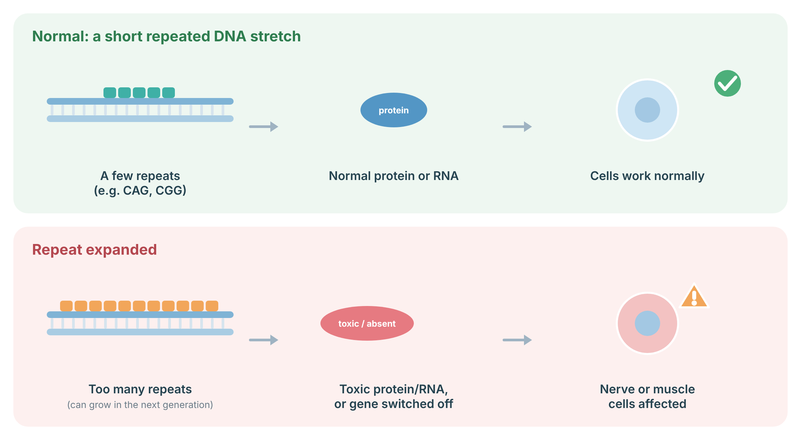
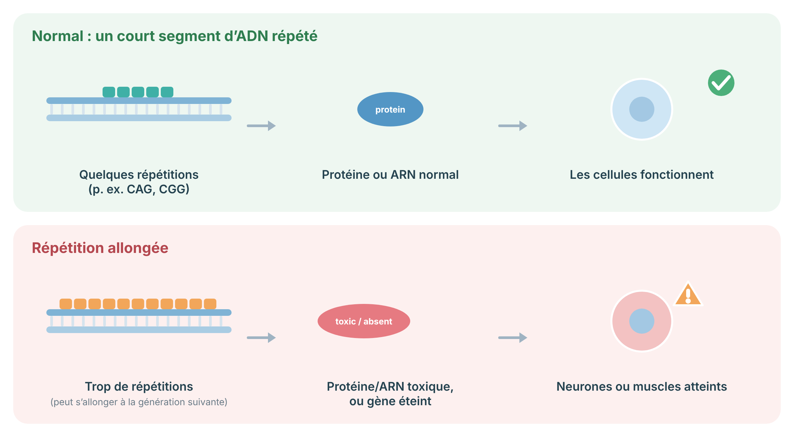

A protocol for myotonic dystrophy types 1 and 2: repeat testing, cardiac surveillance, anaesthesia and multisystem care, pregnancy, and family testing.
Protocole pour la dystrophie myotonique de types 1 et 2 : test des répétitions, surveillance cardiaque, anesthésie et soins multisystémiques, grossesse et dépistage familial.
Myotonic dystrophy is an inherited condition that causes muscle weakness and myotonia (difficulty relaxing a muscle, such as letting go after a handshake). It affects many parts of the body, including the heart's electrical system, the eyes (early cataracts), breathing, hormones, digestion, and sleep. There are two types. Type 1 (DM1) is more common in Québec, especially in the Saguenay–Lac-Saint-Jean region. Regular check-ups, especially of the heart, can prevent serious problems.
La dystrophie myotonique est une maladie héréditaire qui cause une faiblesse musculaire et une myotonie (difficulté à relâcher un muscle, par exemple après une poignée de main). Elle touche plusieurs parties du corps, dont le système électrique du cœur, les yeux (cataractes précoces), la respiration, les hormones, la digestion et le sommeil. Il en existe deux types. Le type 1 (DM1) est plus fréquent au Québec, surtout dans la région du Saguenay–Lac-Saint-Jean. Des suivis réguliers, surtout du cœur, peuvent prévenir des problèmes graves.
DM1 is caused by an expanded CTG repeat in the 3′ untranslated region of DMPK; DM2 by an expanded CCTG repeat in intron 1 of CNBP. Both are autosomal dominant, and toxic RNA gain of function leads to missplicing of many transcripts. DM1 shows marked anticipation; congenital DM1 arises almost exclusively from maternal transmission of large expansions. DM2 is generally milder, with proximal weakness and pain, and does not have a congenital form.
La DM1 est causée par une expansion de la répétition CTG dans la région 3′ non traduite de DMPK; la DM2, par une expansion de la répétition CCTG dans l'intron 1 de CNBP. Les deux sont autosomiques dominantes, et un gain de fonction toxique de l'ARN entraîne un épissage anormal de nombreux transcrits. La DM1 présente une anticipation marquée; la DM1 congénitale provient presque exclusivement d'une transmission maternelle de grandes expansions. La DM2 est généralement plus légère, avec faiblesse proximale et douleur, et n'a pas de forme congénitale.
Some genes contain a short stretch of DNA letters repeated several times (for example CAG or CGG). If the repeat becomes too long, it can produce a toxic protein or RNA, or switch the gene off. Repeats can grow when passed to the next generation, so symptoms may start earlier or be more severe (anticipation). Huntington disease, myotonic dystrophy, fragile X and C9orf72 ALS–FTD are repeat-expansion conditions.

Sources: Malik I, et al. Nat Rev Mol Cell Biol 2021;22:589–607 (PubMed).
Certains gènes contiennent un court segment de lettres d’ADN répété plusieurs fois (par exemple CAG ou CGG). Si la répétition devient trop longue, elle peut produire une protéine ou un ARN toxique, ou éteindre le gène. Les répétitions peuvent s’allonger d’une génération à l’autre : les symptômes peuvent alors commencer plus tôt ou être plus sévères (anticipation). La maladie de Huntington, la dystrophie myotonique, le X fragile et la SLA-DFT liée à C9orf72 sont des maladies par expansion de répétitions.

Sources : Malik I, et al. Nat Rev Mol Cell Biol 2021;22:589–607 (PubMed).
A blood test that measures the size of the repeated section confirms the diagnosis. Testing for type 2 is a separate test.
Une prise de sang qui mesure la taille de la section répétée confirme le diagnostic. Le test pour le type 2 est un test distinct.
The heart's electrical system can slow down or develop dangerous rhythms, even without symptoms. An ECG at least once a year is important. Report fainting, palpitations, or shortness of breath right away. Some people need a pacemaker or defibrillator.
Le système électrique du cœur peut ralentir ou développer des rythmes dangereux, même sans symptômes. Un ECG au moins une fois par année est important. Signalez immédiatement toute perte de conscience, palpitation ou essoufflement. Certaines personnes ont besoin d'un stimulateur cardiaque ou d'un défibrillateur.
A team approach helps manage the many effects of myotonic dystrophy. Before any surgery or sedation, tell the team you have myotonic dystrophy, because anaesthesia carries extra risks.
Une approche d'équipe aide à gérer les nombreux effets de la dystrophie myotonique. Avant toute chirurgie ou sédation, informez l'équipe que vous avez une dystrophie myotonique, car l'anesthésie comporte des risques supplémentaires.
Each child of a person with myotonic dystrophy has a 1 in 2 chance of inheriting it. In DM1, the repeat often gets longer when passed on, and a mother with DM1 can have a baby with the severe congenital form. Pregnancy in a woman with DM1 needs specialised care. Prenatal testing and IVF with embryo testing are available.
Chaque enfant d'une personne atteinte de dystrophie myotonique a une chance sur deux d'en hériter. Dans la DM1, la répétition s'allonge souvent lors de la transmission, et une mère atteinte de DM1 peut avoir un bébé atteint de la forme congénitale sévère. La grossesse chez une femme atteinte de DM1 demande des soins spécialisés. Le test prénatal et la FIV avec analyse des embryons sont offerts.
Original diagrams are the work of the author (© 2026 Dr. Andrew Shuen).
Les schémas originaux sont l'œuvre de l'auteur (© 2026 Dr Andrew Shuen).